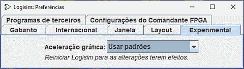

A guia Experimental

Essas preferências servem para habilitar recursos considerados experimentais, inseridos com o intuito de receber retorno dos usuários.
- Aceleração gráfica: Vários usuários relataram que o Logisim parece bastante lento na renderização gráfica. Um usuário notou que a adição de -Dsun.java2d.d3d = true na linha de comando pareceu resolver isso. Você poderá tentar controlar isso usando um menu drop-down. Eu mesmo não observei tais problemas com a velocidade em Logisim, por isso não posso avaliar a sua eficácia; confiarei nos relatórios dos usuários sobre se isso servirá como ajuda. Notar certamente não terá qualquer efeito até o Logisim seja reiniciado.
Próximo: Opções da linha de comando.